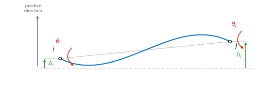

The Slope-Deflection Method
A displacement (stiffness) method: member end moments written directly in terms of joint rotations and displacements — Chapter 3 companion
Motivation — why a displacement method?
The force method (Chapter 2) takes redundant forces as the unknowns: you remove enough restraints to make the structure determinate, solve a determinate primary structure, and enforce compatibility to recover the redundants. That works well when the degree of static indeterminacy is small.
The slope-deflection method flips the unknowns: it takes joint displacements — rotations \(\theta\) and transverse displacements \(\Delta\) — as the primary unknowns. Member end moments are written directly as functions of these displacements (satisfying compatibility automatically), and the unknown displacements are solved from joint equilibrium equations. This is efficient when the degree of kinematic indeterminacy (the number of unknown displacements) is small — and it is the direct ancestor of the matrix stiffness method later in the course, where the same member equations become a member stiffness matrix.
Member kinematics and sign convention
Consider a prismatic member of length \(L\), flexural rigidity \(EI\), running from end \(i\) to end \(j\). Its displaced state is fully described by four quantities: the end rotations \(\theta_i,\theta_j\) and the end transverse displacements \(\Delta_i,\Delta_j\) (measured perpendicular to the member's undeformed axis).
Sign convention: clockwise end rotations \(\theta_i,\theta_j\) are positive; \(\Delta_i,\Delta_j\) are positive in the same sense used to define the member's local transverse axis (shown as “positive direction” in the figure). The end actions follow the same convention: \(M_i,M_j\) are clockwise-positive moments acting on the member, and \(V_i,V_j\) are forces acting on the member in the positive transverse direction. The chord connecting the two displaced end points is rotated from the original member axis by the chord rotation
$$\psi = \frac{\Delta_j - \Delta_i}{L}$$
Both end rotations are drawn with the same clockwise sense in the figure — that is what produces the S-shaped (inflected) elastic curve shown. This is a kinematic diagram only: the actual sign and magnitude of each \(\theta,\Delta\) in a real problem come out of solving the equilibrium equations.
The slope-deflection equations
For a prismatic member with no member loads, the end moments are linear in the four kinematic quantities above. In terms of the chord rotation \(\psi=(\Delta_j-\Delta_i)/L\):
$$M_i = \frac{2EI}{L}\Big(2\theta_i + \theta_j - 3\psi\Big), \qquad M_j = \frac{2EI}{L}\Big(2\theta_j + \theta_i - 3\psi\Big)$$Expanding \(\psi\) and collecting terms in \(\theta_i,\theta_j, \Delta_i,\Delta_j\) individually (the form used when assembling equilibrium equations):
$$M_i = \frac{2EI}{L}\left(2\theta_i + \theta_j + \frac{3}{L}\Delta_i - \frac{3}{L}\Delta_j\right)$$ $$M_j = \frac{2EI}{L}\left(\theta_i + 2\theta_j + \frac{3}{L}\Delta_i - \frac{3}{L}\Delta_j\right)$$When a member also carries transverse load (a uniform load, a point load, …), each equation picks up an additional fixed-end moment term — see below.
Member shears and the 4×4 stiffness matrix
The end shears follow from equilibrium of the member as a free body: taking moments about \(j\) gives \(V_i\), and \(\sum F_y=0\) gives \(V_j=-V_i\):
$$V_i = \frac{M_i+M_j}{L}, \qquad V_j = -V_i$$Substituting the slope-deflection equations and collecting terms gives all four member-end actions as linear functions of all four end displacements:
$$M_i = \frac{2EI}{L}\Big(2\theta_i+\theta_j+\tfrac{3}{L}\Delta_i-\tfrac{3}{L}\Delta_j\Big)$$ $$M_j = \frac{2EI}{L}\Big(\theta_i+2\theta_j+\tfrac{3}{L}\Delta_i-\tfrac{3}{L}\Delta_j\Big)$$ $$V_i = \frac{2EI}{L}\Big(\tfrac{3}{L}\theta_i+\tfrac{3}{L}\theta_j+\tfrac{6}{L^2}\Delta_i-\tfrac{6}{L^2}\Delta_j\Big)$$ $$V_j = \frac{2EI}{L}\Big(-\tfrac{3}{L}\theta_i-\tfrac{3}{L}\theta_j-\tfrac{6}{L^2}\Delta_i+\tfrac{6}{L^2}\Delta_j\Big)$$which is exactly the member stiffness relation \([F]=[K][\Delta]\):
$$\begin{bmatrix}M_i\\M_j\\V_i\\V_j\end{bmatrix} = \frac{2EI}{L} \begin{bmatrix} 2 & 1 & \dfrac{3}{L} & -\dfrac{3}{L} \\[4pt] 1 & 2 & \dfrac{3}{L} & -\dfrac{3}{L} \\[4pt] \dfrac{3}{L} & \dfrac{3}{L} & \dfrac{6}{L^2} & -\dfrac{6}{L^2} \\[4pt] -\dfrac{3}{L} & -\dfrac{3}{L} & -\dfrac{6}{L^2} & \dfrac{6}{L^2} \end{bmatrix} \begin{bmatrix}\theta_i\\\theta_j\\\Delta_i\\\Delta_j\end{bmatrix}$$Reordering rows/columns to group each end's moment with its shear — \([M_i,V_i,M_j,V_j]\) against \([\theta_i,\Delta_i,\theta_j, \Delta_j]\) — gives the same matrix with rows and columns swapped into that order:
$$\begin{bmatrix}M_i\\V_i\\M_j\\V_j\end{bmatrix} = \frac{2EI}{L} \begin{bmatrix} 2 & \dfrac{3}{L} & 1 & -\dfrac{3}{L} \\[4pt] \dfrac{3}{L} & \dfrac{6}{L^2} & \dfrac{3}{L} & -\dfrac{6}{L^2} \\[4pt] 1 & \dfrac{3}{L} & 2 & -\dfrac{3}{L} \\[4pt] -\dfrac{3}{L} & -\dfrac{6}{L^2} & -\dfrac{3}{L} & \dfrac{6}{L^2} \end{bmatrix} \begin{bmatrix}\theta_i\\\Delta_i\\\theta_j\\\Delta_j\end{bmatrix}$$This \(4\times4\) matrix is the member stiffness matrix used later in the direct stiffness method (Section 3.3) — slope-deflection derives it one member at a time; the matrix method assembles it into a global system.
Fixed-end moments (FEM)
The slope-deflection equations above assume no load acts along the member span. When a member does carry load, each end develops an additional moment equal to the moment that would exist if both ends were fully fixed against rotation and translation — the fixed-end moment, \(FEM_i,FEM_j\) — and these add to the right-hand side of the \(M_i,M_j\) equations with their signs. The magnitudes of the two canonical cases every student should have memorized:
| Loading | \(FEM\) magnitude at each end |
|---|---|
| Uniformly distributed load \(w\) over the full span | \(wL^2/12\) |
| Point load \(P\) at midspan | \(PL/8\) |
Signs: under the clockwise-positive convention the two ends carry opposite signs. For a downward load on a horizontal span running left \(i\) to right \(j\): \(FEM_i = -\,wL^2/12\) and \(FEM_j = +\,wL^2/12\) (likewise \(\mp PL/8\)) — the fixed ends push back counterclockwise on the left and clockwise on the right.
The full fixed-end-moment table (both ends fixed, one end pinned, partial/offset loads, etc.) is given in the lecture notes, Section 3.2.1.
Procedure of the slope-deflection method
1. Degrees of freedom (DOF). Label all supports and joints (nodes) to define spans. Draw the deflected shape to identify the number of DOFs — each node may have a linear displacement and/or an angular displacement. Assume unknown displacements act in the positive (clockwise-rotation) direction.
2. Slope-deflection equations. Relate internal moments at each node to the node displacements. Compute fixed-end moments (FEMs) for any loaded spans. Applying the slope-deflection equations generates two equations per interior (fixed–fixed) span, or one equation per span ending in a pin support (fixed–pin). (The one-equation shortcut applies when the end pin or roller genuinely releases the member-end moment — set that end moment to zero and eliminate its rotation. An interior support of a continuous beam still transmits moment and keeps two equations per span.)
3. Equilibrium equations. Write one equilibrium equation per unknown DOF, expressed in terms of the moments from step 2. Solve for the unknown displacements, then substitute back into the slope-deflection equations to recover the member end moments.
This is worked end-to-end in class with a full example — bring the lecture notes, pp. 48–56. The steps above set up every equation you need; the live derivation in lecture walks through solving them for a specific frame.